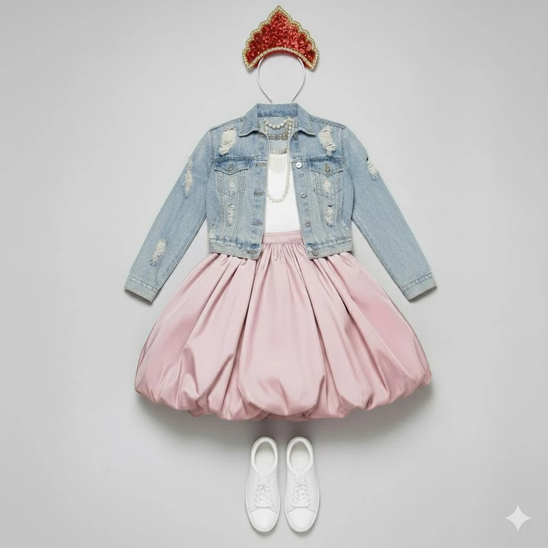
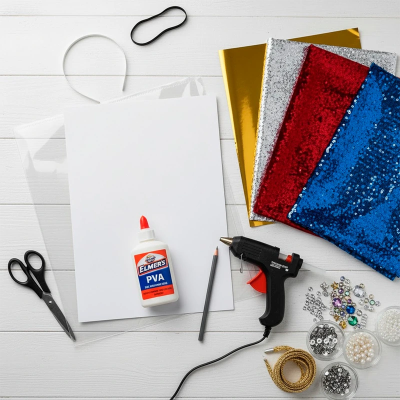
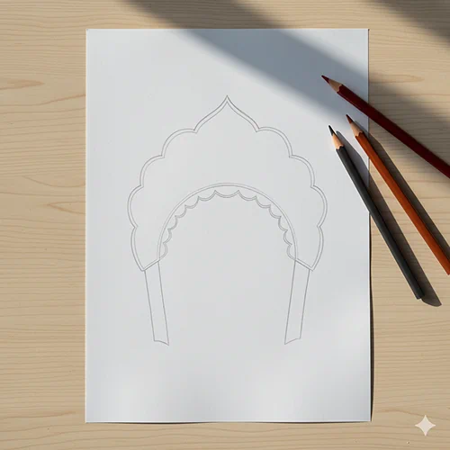
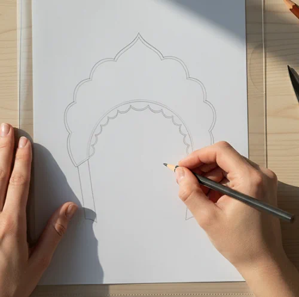
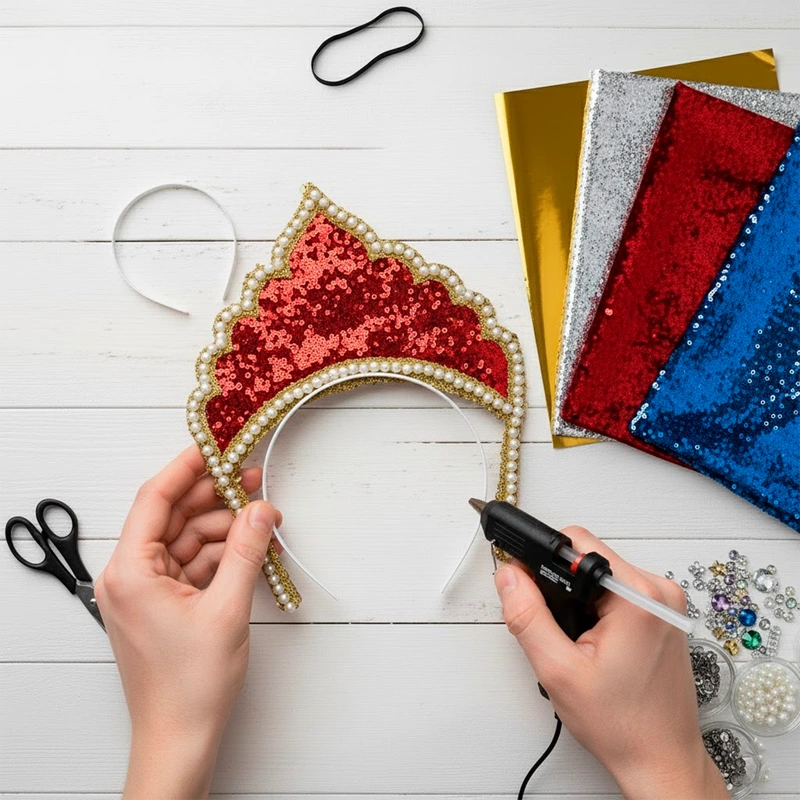
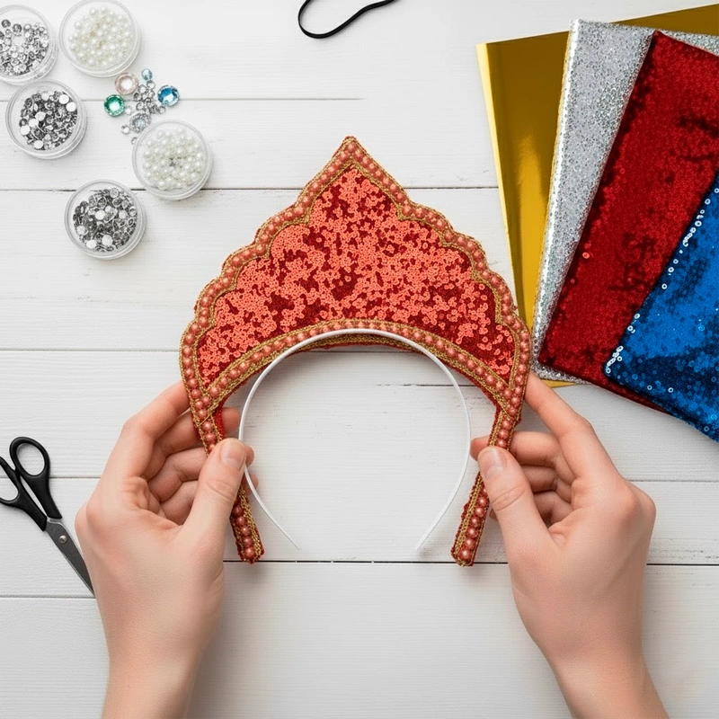

Подборка предметов гардероба

- Кокошник
- Пышная юбка
- Джинсовая куртка
- Кеды
- Майка
- Многослойные цепочки
Совет: если пышной юбкой нет, пришейте пластиковый гимнастический обруч малого диаметра к внутренней юбке на уровне середины бедра. Сверху наденьте платье — оно будет стоять колоколом.
Как сделать кокошник
Вам потребуется:

- Плотный картон или пластиковая папка
- Фольга, блестящая бумага или ткань
- Клей ПВА или термопистолет
- Резинка или ободок
- Тесьма, стразы, пайетки
- Ножницы, карандаш
-
Шаг 1

Нарисуйте на бумаге форму кокошника — верх может быть острым, как у короны, округлый или фигурный, с зубцами по краям.
-
Шаг 2

Приложите шаблон к картону или пластиковой папке. Обведите карандашом и вырежьте 2 одинаковые детали — плотный кокошник будет лучше держать форму.
-
Шаг 3

Обклейте кокошник фольгой, блестящей бумагой или тканью. По контуру закрепите тесьму или приклейте крупные стразы.
-
Шаг 4

Возьмите пластиковый ободок для волос. Приклейте к нему кокошник клеевым пистолетом — несколько капель по длине соприкосновения.

Гримёрная
Посетите гримерную нашего театра и узнайте, как сделать быстрый грим для Марьи